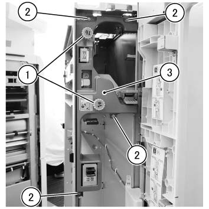
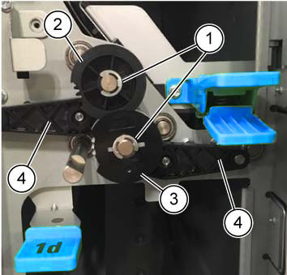
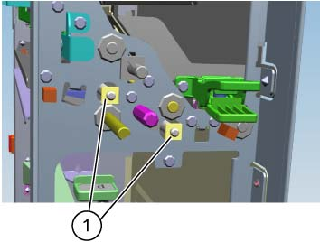
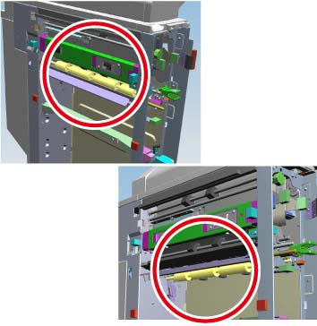
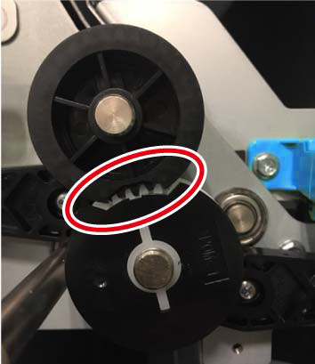

REP 46.6.3 Sponge 传输 辊 
参考 PL:PL 46.6
Removal

在...之后 turning 关闭/脱离 电源开关, 确认 the screen 显示 进入 关闭/脱离 和 the [电源 Saver] button 停止 blinking. 然后, 关闭 the 主 电源 开关, 确认 the [主 电源] 灯 具有 turned 关闭/脱离, 和 然后 关闭 the Breaker 和 unplug 电源插头.
拆卸 纸张 输出 选件 包括 the Interposer 单元.
打开 the 前面 门.
拆卸内盖板. (图 1)
拆卸 旋钮 (1b) 和 旋钮 (1e).
拆卸螺钉 (x4: round).
拆卸内盖板.

(图 1) ipw446004
拆卸 Cam 传动齿轮, Cam 组件, 和 链接 Cam. (图 2)
拆卸E型卡环 (x2).
拆卸 Cam 传动齿轮.
拆卸 Cam 组件.
拆卸 链接 Cam.

(图 2) ipw446007
拆卸 Ball Bearing. (图 3)

(图 3) ip446041
拆卸 Sponge 传输 辊. (图 4)

(图 4) ip446042
安装
安装 Cam 传动齿轮 和 Cam 组件 如...所示 the 照片. (图 5)

(图 5) ipw446008